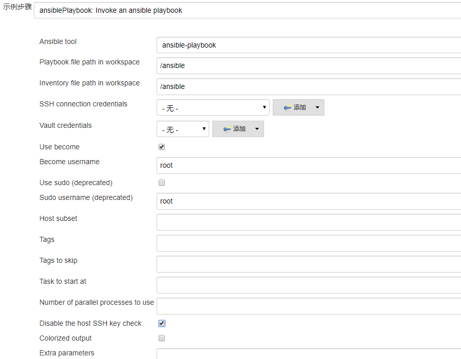
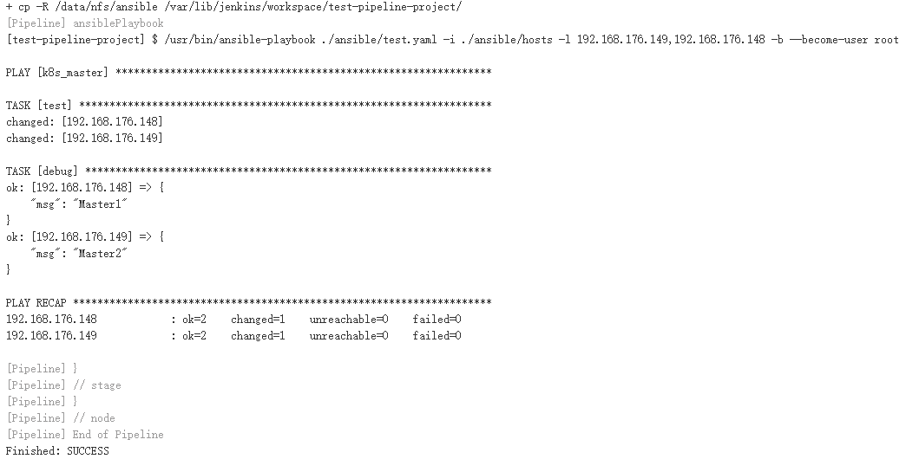
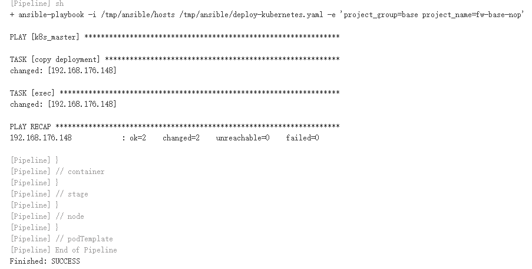

- 01.Jenkins的安装配置与日常维护.md.html
- 02.Jenkins强大的插件功能.md.html
- 03.Devops工具链.md.html
- 04.初探Jenkins CD实践.md.html
- 05.Jenkins常用项目配置参数.md.html
- 06.Jenkins部署之Docker要点.md.html
- 07.Jenkins集成之Ansible要点.md.html
- 08.Jenkins集成Ansible持续部署服务到Docker容器.md.html
- 09.实现自动化引擎之Jenkins Pipeline声明式语法.md.html
- 10.实现自动化引擎之Jenkins Pipeline脚本式语法.md.html
- 11.Pipeline语法进行持续交付与基础实践.md.html
- 12.Jenkins Docker Pipeline插件动态生成Slave节点语法剖析.md.html
- 13.使用 Docker Pipeline插件动态生成Jenkins Slave 实践.md.html
- 14.搞定不同环境下的Jenkins与Kubernetes集群连接配置.md.html
- 15.Jenkins Kubernetes Plugin介绍与语法详解.md.html
- 16.使用Kubernetes编排Jenkins Slave节点持续交付项目.md.html
- 17.使用Kubernetes插件持续部署服务到Kubernetes集群.md.html
- 18.Ansible Plugin插件语法详解与持续部署服务到kubernetes集群.md.html
- 捐赠
18.Ansible Plugin插件语法详解与持续部署服务到kubernetes集群
在实际工作中使用容器编排系统对容器编排已经成为使用容器技术的常态。而在前面的Ansible章节中仅仅介绍了使用Ansible部署服务到docker容器中，对于容器的编排系统没有说明；并且只是介绍了在Jenkins UI中使用bash shell命令和插件配置来使用Ansible。基于此，本节就来介绍一下如何在Pipeline中使用Ansible，并通过示例来进行演示。
本节主要介绍两方面的内容：
在pipeline脚本中使用ansible插件的语法介绍以及使用示例；- 将构建好的镜像持续部署到容器编排系统kubernetes中。
为什么要将本章节放到课程的最后，是因为该文主要讲的是持续部署。对于持续交付操作，在前面的章节中都已经介绍过，所以将前面的持续交付操作直接拿来用就可以了。
Ansible plugin 语法详解
在Pipeline类型的job中，可以通过片段生成器生成使用ansible的语法片段，也可以直接在pipeline中执行shell命令。下面主要介绍一下如何使用ansible语法片段。
进入流水线语法界面，点击”片段生成器菜单“跳转的页面中，steps下拉框的第一个就是我们要使用的片段生成器参数:ansiblePlaybook Invoke and ansible playbook。
如下所示

其中：
Ansible tool：该选项参数是一个下拉框，用来选择ansible的命令列表（我这里只配置了ansible和ansible-playbook命令），需要注意的是，该选项下拉框中的工具列表需要事先在Jenkins的”全局工具配置“菜单中定义ansible命令的名称。
Playbook file path in workspace：该参数用来指定要执行的playbook文件，该文件默认从当前的工作空间（$WORKSPACE）路径查找。需要注意的是，该参数只能指定具体的文件名称，不能通过正则匹配，也不能指定多个文件。
Inventory file path in workspace：该参数用来指定主机清单文件，默认的路径同样是当前工作空间目录。如果该参数指定的是一个目录，则会使用该目录下所有文件中定义的主机。
SSH connection credentials：用来指定连接服务器的凭证，与在前面章节publish over ssh插件用到的凭证一样。如果执行ansible-playbook命令的机器已经做好了服务器免密认证，此处可以不用填写，并且如果要使用该参数时，要确保ansible-playbook命令所在主机存在sshpass命令。
Vault credentials：对于使用了ansible valut命令加密过后的playbook文件，可以添加该参数（用于指定一个凭证）在执行playbook时自动解密。
Use become：用于决定是否启用become username。
Become username：与Use become参数一起使用，指定运行任务的用户 。
Host subset：host的子集，如果在playbook中定义的inventory（hosts）清单文件是一个组，并且该组下有多个主机（ip或域名），通过该参数可以设置在该组中指定的主机上执行playbook任务，如果有多个主机，则每个主机之间需要用逗号（”,“）隔开。
Tags：playbook中任务的标签。如果设置了该参数，则只会执行playbook中与该参数值匹配的任务。
Tags to skip：跳过要执行的标签。如果设置了该参数，则不会执行playbook中与该参数值匹配的任务。
Task to start at：执行playbook时用于从指定的任务开始执行，该参数的值用于匹配playbook中定义的任务的名称。
Number of parallel processes to use：对应ansible中的-f参数，指定并发线程数。
Disable the host SSH key check：使用ssh连接主机时，对于首次连接的主机，ssh会检测本地known_hosts文件中是否存在该主机的host记录，如果不存在则需要手动确认，对于在控制台通过ssh命令连接可以通过手工确认，而对于使用ansible命令时，则需要在ansible.cfg配置文件中设置host_key_checking = False，在jenkins中可以通过勾选此参数框来关闭检查。
Colorized output：在控制台中是否切换彩色编码，并无多大用处。
Extra parameters：用于指定要使用的参数变量，需要加上”-e”参数。
介绍完ansible插件的基本参数以后，下面来看一下该插件的使用方法。
通过上面的片段生成器生成的语法示例如下：
ansiblePlaybook(
become: true,
colorized: true,
credentialsId: '',
disableHostKeyChecking: true,
extras: '..',
installation: 'ansible-playbook',
inventory: '',
limit: '',
playbook: '',
skippedTags: '',
startAtTask: '',
sudo: true,
tags: '',
vaultCredentialsId: ''
)
该语法块在声明式语法和脚本式语法中使用的方式相同。实际工作中可能不会用到所有的参数，根据自己需求选择参数即可。
下面以一个简单的示例演示一下，例如我要执行test.yaml下的任务，只限制在192.168.176.149和192.168.176.148主机上执行。
代码如下：
pipeline{
agent { node { label 'master' } }
stages{
stage('Test'){
steps{
sh "cp -R /data/nfs/ansible $WORKSPACE/"
ansiblePlaybook (
become: true,
disableHostKeyChecking: true,
limit: '192.168.176.149,192.168.176.148',
installation: 'ansible-playbook',
inventory: './ansible/hosts',
playbook: './ansible/test.yaml',
extras: ''
)
}
}
}
}
说明：
cp -R /data/nfs/ansible $WORKSPACE/：为什么要执行该命令，因为在使用docker pipeline插件或者kubernetes插件的时候，对于动态生成的容器默认是没有这些文件以及目录的，这时候就需要使用挂载共享存储的方式将所需的目录挂载到容器内。这里模拟的就是在容器内执行playbook，当然如果将使用的文件放到了源码仓库中可以忽略这一步。
limit 参数就是用来限制执行playbook任务的节点，该示例表示在192.168.176.149,192.168.176.148连个节点上执行任务。
installation 代表使用ansible-playbook命令。
inventory和playbook 分别使用相对路径指定主机清单文件和playbook文件。
hosts和test.yaml文件内容分别如下：
$ cat hosts
[k8s_master]
192.168.176.148
192.168.176.149
192.168.176.150
$ cat test.yaml
---
- hosts: k8s_master
gather_facts: no
tasks:
- name: test
shell: hostname
register: host_name
- name: debug
debug:
msg: "{{ host_name.stdout }}"
执行结果如下：

从执行结果可以看到在指定的主机上执行了命令。
通过上面的示例，对于如何使用ansible插件应该有了初步的了解，下面介绍一下将该插件的语法块集成到前面章节的pipeline的脚本中去使用。
使用Ansible Plugin
根据前面章节的示例汇总，针对不同类型agent代理，对于该插件的使用有如下情况：- agent代理为虚拟机。- agent代理为容器。- agent代理通过kubernetes编排。
当agent为虚拟机时使用ansible插件
当agent代理为虚拟机时，无论是master节点还是node节点，都需要保证节点上已经安装好ansible工具。
在最初的在pipeline实践章节中已经完成了代码的编译以及镜像的构建和推送到私有仓库操作，我们只需要在此基础上对在”ansible持续交付与部署“章节”部署服务到容器“小节使用的playbook脚本稍作修改，只保留对容器和镜像的相关操作即可。
修改完的playbook脚本如下：
$ cat deploy.yaml
- hosts: "{{ target }}"
remote_user: root
gather_facts: False
vars:
dest_dict: "/data/{{ project_name }}/"
tasks:
- name: 判断目录是否存在
shell: ls {{ dest_dict }}
register: dict_exist
ignore_errors: true
- name: 创建相关目录
file: dest="{{ item }}" state=directory mode=755
with_items:
- "{{ dest_dict }}"
- /data/logs/{{ project_name }}
when: dict_exist is failure
- name: 查看容器是否存在
shell: "docker ps -a --filter name={{ project_name }} |grep -v COMMAND"
ignore_errors: true
register: container_exists
- name: 查看容器状态
shell: "docker ps -a --filter name={{ project_name }} --format '{{ '{{' }} .Status {{ '}}' }}'"
ignore_errors: true
register: container_state
when: container_exists.rc == 0
- name: 关闭容器
shell: "docker stop {{ project_name }}"
when: "('Up' in container_state.stdout)"
ignore_errors: true
- name: 删除容器
shell: "docker rm {{ project_name }}"
when: container_exists.rc == 0
ignore_errors: true
- name: 查看镜像是否存在
command: "docker images --filter reference={{ registry_url }}/{{ project_group }}/{{ project_name }}* --format '{{ '{{' }} .Repository {{ '}}' }}:{{ '{{' }}.Tag {{ '}}' }}'"
register: image_exists
ignore_errors: true
- name: 删除镜像
shell: "docker rmi -f {{ item }}"
loop: "{{ image_exists.stdout_lines }}"
ignore_errors: true
when: image_exists.rc == 0
- name: 启动容器
shell: 'docker run {{ run_option }} --name {{ project_name }} {{ image_name }}'
主要修改了”查看镜像是否存在“任务获取镜像列表的命令，添加了两个匹配镜像url的变量（此处需要根据你的实际情况修改），在执行playbook的时候需要添加这两个变量。
对于执行playbook时用到的变量，我们直接在pipeline中定义即可。
首先看一下在pipeline中使用ansible-playbook命令部署。
stage('部署镜像'){
environment {
container_run_option="--network host -e TZ='Asia/Shanghai' -d -v /etc/localtime:/etc/localtime:ro -m 2G --cpu-shares 512 -v /data/logs/${project_name}:/data/logs/${project_name}"
}
steps{
sh """
cp -R /data/nfs/ansible $WORKSPACE/
echo $container_run_option
ansible-playbook -i $WORKSPACE/ansible/hosts $WORKSPACE/ansible/deploy.yaml -e "workspace='${WORKSPACE}' registry_url=$registry_url project_group=$project_group target='192.168.176.160' project_name='$project_name' run_option='$container_run_option' image_name='${registry_url}/${project_group}/${project_name}:${BUILD_ID}'"
"""
}
}
注意：我这里执行ansible-playbook命令的主机对目标主机默认做好了免密认证。如果对ansible主机对目标主机没有做免密认证，可以通过添加credentialsId参数指定jenkins凭证的方式向远程服务器认证。
既然介绍了ansible的插件的语法，为什么还要使用ansible-playbook命令呢？是为了测试playbook脚本是否能够正常执行，传入的变量是否有效，以及整个流水线是否能够执行成功等。毕竟在执行playbook的时候传入了许多变量，如果直接使用ansible插件，可能会遇到意想不到的坑，有时候一个不起眼的双引号或者单引号都能导致playbook执行失败。
如果换成使用ansible插件，pipeline语法快如下：
stage('部署镜像'){
environment {
container_run_option="\'--network host -e TZ=Asia/Shanghai -d -v /etc/localtime:/etc/localtime:ro -m 2G --cpu-shares 512 -v /data/logs/${project_name}:/data/logs/${project_name}\' "
}
steps{
sh """
cp -R /data/nfs/ansible $WORKSPACE/
echo $container_run_option
"""
ansiblePlaybook (
become: true,
disableHostKeyChecking: true,
installation: 'ansible-playbook',
inventory: './ansible/hosts',
playbook: './ansible/deploy.yaml',
extras: ' -e "workspace=${WORKSPACE} target="192.168.176.160" registry_url=$registry_url project_group=$project_group project_name=$project_name run_option=$container_run_option image_name=${registry_url}/${project_group}/${project_name}:${BUILD_ID}"'
)
}
}
使用ansible插件的时候，要注意变量的引用。变量通过extras参数传入，使用该参数时请务必加上”-e”选项。对于docker运行时的参数，需要使用单引号(” ‘ “)引起来，并添加转义（可不做），防止在转化成实际变量值时出错。
比如，对于上面的container_run_option运行参数，如果不加单引号，不做转义，实际传递到extras参数的时候是这样的。
run_option= --network host -e TZ=Asia/Shanghai -d -v /etc/localtime:/etc/localtime:ro -m 2G --cpu-shares 512 -v /data/logs/fw-base-nop:/data/logs/fw-base-nop
传入到playbook中对应的docker启动命令如下：
docker run --network --name fw-base-nop 192.168.176.155/base/fw-base-nop:289
此时就会导致容器启动失败。
而使用了引号与转义后是这样的。
run_option='--network host -e TZ=Asia/Shanghai -d -v /etc/localtime:/etc/localtime:ro -m 2G --cpu-shares 512 -v /data/logs/fw-base-nop:/data/logs/fw-base-nop'
这才是正确的docker启动时的运行参数。
该示例只是展示了使用ansible部署容器相关的操作，对于代码的编译和镜像的构建还是通过pipeline语法实现的，如果你不想要将这部分内容使用pipeline脚本实现，也可以将这部分操作通过playbook脚本实现，如何编写这里就不在细说了。
当agent为容器时使用ansible插件
当agent为容器时分为两种情况，经过前几章的学习，你应该能够猜到了，没错，这两种情况分别是使用docker pipeline插件在虚拟机上生成容器和使用kubernetes 插件编排容器。使用docker pipeline插件时可以选择在容器内使用ansible插件，也可以选择在虚拟机上使用ansible插件；在使用kubernetes插件时，就只能在容器内使用ansible插件了，无论哪种情况都要保证在agent代理上有ansible-playbook命令。
在虚拟机上使用ansible插件在上一小节已经做过介绍，下面主要介绍一下如何在容器中使用该插件。
想要在容器中使用ansible插件，需要使用一个单独的ansible镜像，而不能通过在容器中挂载可执行文件的方式使用。这与使用docker可执行文件的方式相似，可执行文件的使用均依赖于当前的系统环境。并且ansible运行时还依赖python环境以及需要用到的各种模块，单独拷贝二进制文件到镜像的方式同样也不适用与ansible。好在docker hub上已经有了各种版本的ansible镜像，我们只需要直接拿过来用即可。
首先使用镜像做一个简单的测试，还是使用上一小节的示例，只不过此次使用容器作为agent代理，完成playbook的执行。
代码如下所示：
pipeline {
agent {
docker{
image 'gableroux/ansible:2.7.10'
args '-v /data/:/data/ -v /root/.ssh:/root/.ssh'
}
}
stages('build') {
stage('test-ansilbe'){
steps{
sh "ansible-playbook -i /data/nfs/ansible/hosts /data/nfs/ansible/test.yaml "
}
}
}
}
该示例会自动在某一个节点上启动容器。
这里需要注意的是：
1、 在容器内执行ansible-playbook任务时，需要连接到远程主机，此时的ansible主机（容器）是没有对远程服务器经过免密认证的，除了通过在主机清单文件hosts中添加主机参数以外，也可以通过挂载宿主机ssh目录的方式，我这里使用的是root用户，这样在容器中连接远程服务器时不需要单独认证即可完成连接。不过此种方式需要确保宿主机可以通过免秘钥认证连接目标服务器。
2、 除此之外，在使用ansible插件的ansiblePlaybook方法时，也可以通过”credentialsId“参数指定jenkins凭据来向远程服务器认证。此时，有两个问题需要我们考虑到：
如果不使用挂载.ssh目录的方式（或者通过在清单文件中添加ansible用户和密码参数的方式），那么还需要配置ansible的配置文件ansible.cfg，因为每启动一个动态容器都相当于一台新的机器，去连接远程主机时会检查本地known_hosts文件有没有远程主机的fingerprint key串，如果没有需要手动输入yes确认，而使用ansible执行任务时默认是不能手动输入的，所以还需要在ansible配置文件中配置host_key_checking = False来解决此问题，当然你也可以在使用ansible插件时通过disableHostKeyChecking参数来解决此问题。
如果不使用.ssh目录的方式，使用credentialsId参数时，ansiblePlaybook方法连接远程主机时使用的sshpass命令对远程主机进行认证（通过jenkins执行任务时的控制台日志可以看到），默认使用的镜像是没有该命令的，所以我们还需要安装此命令。
自定义ansible镜像
在上面使用的ansible镜像的基础上，在不使用ansible 插件的情况下，定制的Dockerfile内容如下：
FROM gableroux/ansible:2.7.10
RUN echo "http://mirrors.aliyun.com/alpine/latest-stable/main/" > /etc/apk/repositories \
&& echo "http://mirrors.aliyun.com/alpine/latest-stable/community/" >> /etc/apk/repositories \
&& apk add --update --no-cache openssh sshpass \
&& echo "[defaults] \n" > ~/.ansible.cfg \
&& echo "host_key_checking = False" >> ~/.ansible.cfg
注意：
如果不想使用ansible.cfg配置文件来定义host_key_checking = False，也可以通过在执行ansible时将该配置通过变量的方式传入，例如：
ansible-playbook xxx.yaml -e "host_key_checking = False"
构建镜像。
docker build -t 192.168.176.155/library/ansible:v2.7.10 .
如果想要在指定的节点上执行，代码如下：
pipeline {
agent { node { label 'slave-43' } }
stages('build') {
stage('test-ansilbe'){
steps{
script{
sh "hostname"
docker.image('gableroux/ansible:2.7.10').inside('-v /data/:/data/ -v /root/.ssh:/root/.ssh '){
sh "ansible-playbook -i /data/nfs/ansible/hosts /data/nfs/ansible/test.yaml "
}
}
}
}
}
}
该示例会在slave-43节点上启动容器执行playbook。
基础的演示完成了，放到实际脚本中去应该简单多了吧。
方法比较多，下面给出一种，例如使用多个agent示例。
pipeline {
agent { node { label 'master' } }
environment {
project_name = 'fw-base-nop'
jar_name = 'fw-base-nop.jar'
registry_url = '192.168.176.155'
project_group = 'base'
}
stages('build') {
stage('代码拉取并编译'){
steps {
script {
docker.image('alpine-cicd:latest').inside('-v /root/.m2:/root/.m2'){
checkout([$class: 'GitSCM', branches: [[name: '*/master']], doGenerateSubmoduleConfigurations: false, extensions: [], submoduleCfg: [], userRemoteConfigs: [[credentialsId: 'c33d60bd-67c6-4182-b52c-d7aeebfab772', url: 'http://192.168.176.154/root/base-nop.git']]])
echo "开始编译 "
sh "cd $project_name && mvn clean install -DskipTests -Denv=beta"
}
}
}
}
stage('构建镜像'){
steps {
script{
jar_file=sh(returnStdout: true, script: "find ${WORKSPACE} ./ -name $jar_name |head -1").trim()
docker.image('alpine-cicd:latest').inside('-v /root/.m2:/root/.m2 -v /data/:/data/'){
sh "cp $jar_file /data/$project_group/$project_name/"
}
}
}
}
stage('上传镜像'){
steps {
script {
docker.withRegistry('http://192.168.176.155', 'auth_harbor') {
docker.image('alpine-cicd:latest').inside('-v /data/:/data/ -v /var/run/docker.sock:/var/run/docker.sock'){
def customImage=docker.build("${registry_url}/${project_group}/${project_name}:${env.BUILD_ID}","/data/${project_group}/${project_name}/")
customImage.push()
}
}
sh "docker rmi -f ${registry_url}/${project_group}/${project_name}:${env.BUILD_ID}"
}
}
}
stage('部署镜像'){
environment{
container_run_option="--network host -e TZ='Asia/Shanghai' -d -v /etc/localtime:/etc/localtime:ro -m 2G --cpu-shares 512 -v /data/logs/${project_name}:/data/logs/${project_name}"
}
steps{
script{
docker.image('gableroux/ansible:2.7.10').inside('-v /data/:/data/ -v /root/.ssh:/root/.ssh'){
sh """
ansible-playbook -i /data/nfs/ansible/hosts /data/nfs/ansible/deploy.yaml -e "workspace='${WORKSPACE}' registry_url=$registry_url project_group=$project_group target_host='192.168.176.160' project_name='$project_name' run_option='$container_run_option' image_name='${registry_url}/${project_group}/${project_name}:${BUILD_ID}'"
"""
}
}
}
}
}
}
如果你想要定义一个全局agent代理，需要你使用的镜像中包含ansible命令，这就需要你使用上面自定义的镜像了。
使用ansible插件的方式与上一小节中的一样，将ansible-playbook命令换成ansiblePlaybook()即可，代码如下所示：
stage('部署镜像'){
environment {
container_run_option="\'--network host -e TZ=Asia/Shanghai -d -v /etc/localtime:/etc/localtime:ro -m 2G --cpu-shares 512 -v /data/logs/${project_name}:/data/logs/${project_name}\'"
}
steps{
script{
docker.image('gableroux/ansible:2.7.10').inside('-v /data/:/data/ -v /root/.ssh:/root/.ssh'){
ansiblePlaybook (
become: true,
disableHostKeyChecking: true,
installation: '/usr/local/bin/ansible-playbook',
inventory: '/data/nfs/ansible/hosts',
playbook: '/data/nfs/ansible/deploy.yaml',
extras: ' -e "workspace=${WORKSPACE} target="192.168.176.160" registry_url=$registry_url project_group=$project_group project_name=$project_name run_option=$container_run_option image_name=${registry_url}/${project_group}/${project_name}:${BUILD_ID}"'
)
}
}
}
}
注意：
在使用ansible容器作为agent节点时，一定要注意ansible-playbook命令的位置。比如我在jenkins系统中配置的命令路径为/usr/bin/ansible-playbook，那么通过片段生成器生成的语法片段中installation参数默认指定的ansible-playbook命令的路径为/usr/bin；而我使用的ansible镜像（gableroux/ansible:2.7.10），ansible-playbook命令的默认路径为/usr/local/bin/ansible-playbook，这时候如果installation参数的值还是ansibl-playbook，在运行容器执行ansible-playbook命令时就会提示命令找不到。所以这里应该设置成/usr/local/bin/ansible-playbook。
如果不想使用宿主机下的/root/.ssh文件，可以通过添加credentialsId参数，用于指定登录远程服务器的jenkins凭证，如下所示：
docker.image('192.168.176.155/library/ansible:v2.7.10').inside('-v /data/:/data/'){
ansiblePlaybook (
become: true,
disableHostKeyChecking: true,
installation: '/usr/local/bin/ansible-playbook',
inventory: '/data/nfs/ansible/hosts',
credentialsId: '160-ssh',
playbook: '/data/nfs/ansible/deploy.yaml',
extras: ' -e "workspace=${WORKSPACE} target_host="192.168.176.160" registry_url=$registry_url project_group=$project_group project_name=$project_name run_option=$container_run_option image_name=${registry_url}/${project_group}/${project_name}:35"'
)
}
有关使用容器作为agent代理的内容就介绍到这里。
当agent代理通过kubernetes编排
当agent代理使用kubernetes系统编排时，具体的部署流程与上面使用docker容器作为agent代理流程是一样的。只不过既然使用kubernetes系统，那么应用容器的部署肯定也不是只单独部署了，需要将容器部署到kubernetes集群中。所以我们需要从新编写ansible-playbook脚本。
我们只需要将在上一节中用的k8s的资源对象文件deployment.ymal拷贝到k8s master主机上指定的目录下apply即可。
同前两节一样，在开始之前还是使用ansible-playbook命令测试一下流程是成功：
def project_name = 'fw-base-nop' //项目名称
def registry_url = '192.168.176.155' //镜像仓库地址
def project_group = 'base'
podTemplate(cloud: 'kubernetes',namespace: 'default', label: 'pre-CICD',
serviceAccount: 'default', containers: [
containerTemplate(
name: 'jnlp',
image: "192.168.176.155/library/jenkins-slave:sonar",
args: '${computer.jnlpmac} ${computer.name}',
ttyEnabled: true,
privileged: true,
alwaysPullImage: false,
),
containerTemplate(
name: 'ansible',
image: "192.168.176.155/library/ansible:v2.7.10",
ttyEnabled: true,
privileged: true,
command: 'cat',
alwaysPullImage: false,
),
],
volumes: [
nfsVolume(mountPath: '/tmp', serverAddress: '192.168.177.43', serverPath: '/data/nfs', readOnly: false),
hostPathVolume(mountPath: '/var/run/docker.sock', hostPath: '/var/run/docker.sock'),
nfsVolume(mountPath: '/root/.m2', serverAddress: '192.168.177.43', serverPath: '/data/nfs/.m2', readOnly: false),
],
){
node('pre-CICD') {
stage('deploy'){
container('ansible'){
sh """
ansible-playbook -i /tmp/ansible/hosts /tmp/ansible/deploy-kubernetes.yaml -e "project_group=$project_group project_name=$project_name"
"""
}
}
}
}
说明：
在stage(‘deploy’)阶段，简单测试一下使用ansible-playbook命令实现部署到kubernetes集群。其中deploy-kubernetes.yaml内容如下：
---
- hosts: k8s_master
gather_facts: False
tasks:
- name: copy deployment
copy: src=/tmp/k8s_yaml/{{ project_group }}/{{ project_name }}/deployment.yaml dest=/data/{{ project_group }}/{{ project_name }}/
- name: exec
shell: kubectl apply -f /data/{{ project_group }}/{{ project_name }}/deployment.yaml
执行结果如下：

使用ansible命令可以完成部署，那么证明playbook文件和ansible-playbook命令都是没问题的，下面使用ansible插件测试一下。
因为是使用的脚本式语法，pipeline代码如下：
stage('deploy'){
container('ansible'){
ansiblePlaybook (
become: true,
disableHostKeyChecking: true,
installation: '/usr/local/bin/ansible-playbook',
inventory: '/tmp/ansible/hosts',
credentialsId: '160-ssh',
limit: '192.168.176.148',
playbook: '/tmp/ansible/deploy-kubernetes.yaml',
extras: " -e 'project_group=$project_group project_name=$project_name'"
)
}
}
基本上与在docker中的配置一样。
完整的代码如下：
def project_name = 'fw-base-nop' //项目名称
def registry_url = '192.168.176.155' //镜像仓库地址
def project_group = 'base'
podTemplate(cloud: 'kubernetes',namespace: 'default', label: 'pre-CICD',
serviceAccount: 'default', containers: [
containerTemplate(
name: 'jnlp',
image: "192.168.176.155/library/jenkins-slave:sonar",
args: '${computer.jnlpmac} ${computer.name}',
ttyEnabled: true,
privileged: true,
alwaysPullImage: false,
),
containerTemplate(
name: 'ansible',
image: "192.168.176.155/library/ansible:v2.7.10",
ttyEnabled: true,
privileged: true,
command: 'cat',
alwaysPullImage: false,
),
],
volumes: [
nfsVolume(mountPath: '/tmp', serverAddress: '192.168.177.43', serverPath: '/data/nfs', readOnly: false),
hostPathVolume(mountPath: '/var/run/docker.sock', hostPath: '/var/run/docker.sock'),
nfsVolume(mountPath: '/root/.m2', serverAddress: '192.168.177.43', serverPath: '/data/nfs/.m2', readOnly: false),
],
){
node('pre-CICD') {
stage('build') {
try{
container('jnlp'){
stage('clone code'){
checkout([$class: 'GitSCM', branches: [[name: '*/master']], doGenerateSubmoduleConfigurations: false, userRemoteConfigs: [[credentialsId: 'c33d60bd-67c6-4182-b52c-d7aeebfab772', url: 'http://192.168.176.154/root/base-nop.git']]])
script {
imageTag = sh(returnStdout: true, script: 'git rev-parse --short HEAD').trim()
}
echo "${imageTag}"
currentBuild.result == 'SUCCESS'
}
stage('Build a Maven project') {
sh "cd ${project_name} && mvn clean install -DskipTests -Pproduct -U"
currentBuild.result = 'SUCCESS'
}
}
}catch(e){
currentBuild.result = 'FAILURE'
}
if (currentBuild.result == null || currentBuild.result == 'SUCCESS') {
container('jnlp'){
stage('sonar test'){
withSonarQubeEnv(credentialsId: 'sonarqube') {
sh "sonar-scanner -X "+
"-Dsonar.login=admin " +
"-Dsonar.language=java " +
"-Dsonar.projectKey=${JOB_NAME} " +
"-Dsonar.projectName=${JOB_NAME} " +
"-Dsonar.projectVersion=${BUILD_NUMBER} " +
"-Dsonar.sources=${WORKSPACE}/fw-base-nop " +
"-Dsonar.sourceEncoding=UTF-8 " +
"-Dsonar.java.binaries=${WORKSPACE}/fw-base-nop/target/classes " +
"-Dsonar.password=admin "
}
}
}
withDockerRegistry(credentialsId: 'auth_harbor', url: 'http://192.168.176.155') {
stage('build and push docker image') {
sh "cp /tmp/Dockerfile ${project_name}/target/"
def customImage = docker.build("${registry_url}/library/${project_name}:${imageTag}-${BUILD_NUMBER}","--build-arg jar_name=${project_name}.jar ${project_name}/target/")
echo "推送镜像"
customImage.push()
}
stage('delete image') {
echo "删除本地镜像"
sh "docker rmi -f ${registry_url}/library/${project_name}:${imageTag}-${BUILD_NUMBER}"
}
}
}else {
echo "---currentBuild.result is:${currentBuild.result}"
emailext (
subject: "'${env.JOB_NAME} [${env.BUILD_NUMBER}]' 构建异常",
body: """
详情：<br>
failure: Job ${env.JOB_NAME} [${env.BUILD_NUMBER}] <br>
状态：${env.JOB_NAME} jenkins 构建异常 <br>
URL ：${env.BUILD_URL} <br>
项目名称 ：${env.JOB_NAME} <br>
项目构建id：${env.BUILD_NUMBER} <br>
信息: 代码编译失败
""",
to: "[email protected]",
recipientProviders: [[$class: 'DevelopersRecipientProvider']]
)
}
stage('deploy'){
if (currentBuild.result == null || currentBuild.result == 'SUCCESS') {
sh 'sed -i 's#fw-base-nop:.*-*[0-9]\$#${project_name}:${imageTag}-${BUILD_NUMBER}#' /tmp/${project_group}/${project_name}/deployment.yaml'
container('ansible'){
ansiblePlaybook (
become: true,
disableHostKeyChecking: true,
installation: '/usr/local/bin/ansible-playbook',
inventory: '/tmp/ansible/hosts',
credentialsId: '160-ssh',
limit: '192.168.176.148',
playbook: '/tmp/ansible/deploy-kubernetes.yaml',
extras: " -e 'project_group=$project_group project_name=$project_name'"
)
}
}
}
}
}
}
说明：
有一点需要注意的是对于修改资源对象文件deployment.yaml中image参数的值，可以通过sed命令直接修改共享存储中的源文件该参数的值（前提是在共享存储挂载到pod时权限可写），也可以通过在ansible playbook脚本文件（deployment-kubernetes.yaml）中添加任务去修改（比如使用lineinfile模块），这里就不在演示了。
这样便完成了使用ansible插件去部署容器到kubernetes集群的操作。而在实际工作中，由于部署的复杂性和多样性，我们在更新应用的时候可能不只要更新服务，我们还需要更新应用的所使用的资源大小，应用的端口，日志路径等任何可能修改信息，此时只是简单的使用单个playbook文件已经无法满足要求了，这时我们在之前介绍到的ansible 相关的知识就派上用场了。
使用ansible-playbook最常用的的场景就是使用role，定义一系列角色去完成设定的任务。在使用role编写playbook部署容器到kubernetes集群时，根据需求的不同对于所需的kubernetes资源对象的定义也会有所差异。我这里就简单的介绍一种基本部署的流程。
通过编写一个playbook文件，作为整个部署脚本的执行入口，如下所示：
$ cat dev-common.yml
- hosts: DEV-TEST-k8s
remote_user: root
gather_facts: False
roles:
- dev-k8s
通过上面的入口文件，然后看一下该roles目录都包含哪些role以及playbook脚本文件。
tree roles/
roles/
└── dev-k8s
├── tasks
│ └── main.yml
└── templates
├── deployments.yaml.j2
roles目录包含一个dev-k8 role：
role下的tasks目录用于存放执行任务的playbook。- templates目录用于存放kubernetes资源对象的模板文件。- 资源对象文件只配置了一个做示例，实际工作中可能会涉及到更多（比如configmap，ingress，service等），本例仅作参考。
然后看一下这个tasks下playbook的内容，命令都比较简单，并且定义了一系列变量，这些变量都可以在pipeline脚本中定义。
$ cat tasks/main.yml
---
- name: 判断目录是否存在
shell: ls {{ yaml_dir }}/{{ns}}/dev-{{ server_name }}
register: dict_exist
ignore_errors: true
- name: Create the k8s-config directory
file: path="{{ yaml_dir }}/{{ns}}/dev-{{ server_name }}" state=directory mode=0755
when: dict_exist is failure
- name: Create project file
template: "src={{ item }}.j2 dest={{ yaml_dir }}/{{ns}}/dev-{{ server_name }}/dev-{{server_name}}-{{ item }}"
with_items:
- deployments.yaml
- name: 部署
shell: "cd {{ yaml_dir }}/{{ns}}/dev-{{ server_name }} && {{bin_dir}}/kubectl apply -f . --record"
说明：
- 变量
yaml_dir和bin_dir分别用于存放kubernetes资源对象文件和kubectl命令，这两个变量放到了inventory清单文件中，没有通过外部变量传入，根据自己实际情况修改。 - 其他变量参考下面template模板文件。
然后看一下template下的资源对象模板文件。
$ cat deployments.yaml.j2
---
apiVersion: extensions/v1beta1
kind: Deployment
metadata:
name: dev-{{server_name}}
namespace: {{ns}}
spec:
replicas: 2
strategy:
rollingUpdate:
maxSurge: 1
maxUnavailable: 1
revisionHistoryLimit: 10
template:
metadata:
labels:
name: dev-{{server_name}}
spec:
hostNetwork: true
terminationGracePeriodSeconds: 60
imagePullSecrets:
- name: mysecret
containers:
- name: dev-{{server_name}}
image: 192.168.176.155/base/{{server_name}}:{{ tag }}
imagePullPolicy: Always
lifecycle:
preStop:
exec:
command: ["rm","-r","-f","/data/logs/{{server_name}}/"]
env:
- name: TZ
value: "Asia/Shanghai"
{% if java_opts %}
- name: JAVA_OPTS
value: {{java_opts}}
- name: _JAVA_OPTIONS
value: {{java_opts}}
{% else %}
- name: JAVA_OPTS
value: "-Xms1024m -Xmx1024m"
- name: _JAVA_OPTIONS
value: "-Xms1024m -Xmx1024m"
{% endif %}
ports:
- containerPort: {{port}}
resources:
limits:
cpu: {{ cpu|int }}m
memory: {{ mem|int }}Mi
requests:
cpu: {{ cpu|int }}m
memory: {{ mem|int }}Mi
volumeMounts:
{% if server_name == "test-enter" %}
- name: dev-{{server_name}}-logs
mountPath: /data/logs/test-enter
{% else %}
- name: dev-{{server_name}}-logs
mountPath: /data/logs/{{server_name}}
{% endif %}
- name: host-resolv
mountPath: /etc/resolv.conf
- name: tz-config
mountPath: /etc/localtime
volumes:
- name: host-resolv
hostPath:
path: /etc/resolv.conf
- name: tz-config
hostPath:
path: /usr/share/zoneinfo/Asia/Shanghai
- name: dev-{{server_name}}-logs
emptyDir: {}
说明：
该资源对象填充了一些变量，其中：-
server_name：表示项目名称，对应持续交付步骤时的${project_name}。-
ns：表示该资源对象部署到的namespace，对应持续交付步骤的${project_group}。-
tag：表示镜像的tag，对应持续交付步骤的${imageTag}-${BUILD_NUMBER}。-
java_opts：表示jvm的配置，变量值由外部传入。-
cpu/mem：cpu和内存设置，由外部变量传入。-
port：服务端口，由外部变量传入。
执行命令为：
values="server_name=${project_name} port=8083 cpu=1024 mem=2048 java_opts=${java_opts} ns=$project_group tag=${imageTag}-${BUILD_NUMBER}"
ansible-playbook /etc/ansible/dev-common.yaml -e "$values"
此示例模板仅做流程参考，在工作中可以根据自己的实际情况进行修改配置。
持续交付和持续部署的实现方式具有多样性，最重要的是要学会将这些工具链结合起来使用，从中找到适合自己的方式方法。
© 2019 - 2023 Liangliang Lee. Powered by gin and hexo-theme-book.